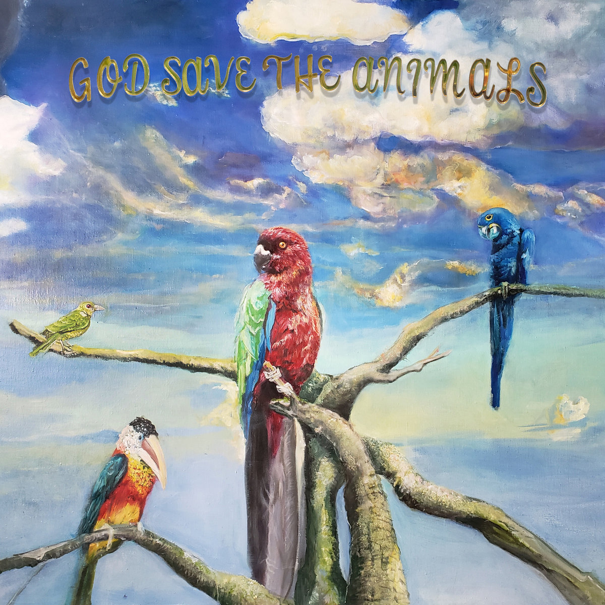

Skip to Main Content
Home

God Save the Animals
Alex G
2022
Genres
Alternative
Indie
Pitchfork Rating:
8.4
Favorite Track:
S.D.O.S
Comments:
Some Comments on the album
Comments: Some Comments on the album